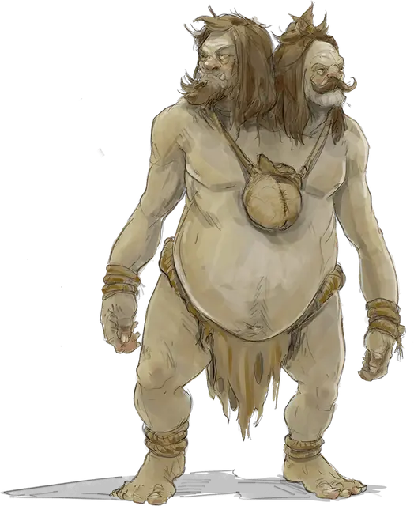

«Демогоргон»
«The Demogorgon»
Большой Великан, хаотично-нейтральный

Класс Доспеха 15 (природный доспех)
Хиты 123 (13к12 + 39)
Скорость 40 футов
| мод | спас | ||
|---|---|---|---|
| СИЛ | 21 | +5 | +5 |
| ЛОВ | 8 | −1 | −1 |
| ТЕЛ | 17 | +3 | +3 |
| мод | спас | ||
|---|---|---|---|
| ИНТ | 6 | −2 | −2 |
| МДР | 10 | +0 | +0 |
| ХАР | 8 | −1 | −1 |
Навыки Восприятие +3
Чувства тёмное зрение 60 футов, пассивное Восприятие 13
Опасность 8 (3900 опыта)
Бонус мастерства +3
Особенности
Две головы. Эттин обладает преимуществом к проверкам Мудрости (Восприятие) и спасброскам против слепоты, глухоты, ошеломления и бессознательности.
Неусыпный. Когда одна голова эттина спит, другая бодрствует.
Действия
Мультиатака. Эттин совершает две атаки: одну боевым топором и одну моргенштерном.
Боевой топор. . Рукопашная атака оружием: +7 к попаданию, досягаемость 5 футов, одна цель. Попадание: Рубящий урон 14 (2к8 + 5).
Моргенштерн. . Рукопашная атака оружием: +7 к попаданию, досягаемость 5 футов, одна цель. Попадание: Колющий урон 14 (2к8 + 5).
Огненное дыхание (перезарядка 5–6). Эттин выдыхает огонь 30-футовым конусом. Все существа в этой области должны совершить спасбросок Ловкости Сл 14, получая 45 (10к8) урона огнём при провале, или половину этого урона при успехе.
Ледяное дыхание (перезарядка 5–6). Эттин выдыхает ледяной взрыв 30-футовым конусом. Все существа в этой области должны совершить спасбросок Телосложения Сл 14, получая 34 (10к8) урона холодом при провале, или половину этого урона при успехе.
Взор. Эттин обращает магический взор на одно существо, которое он может видеть, и находящееся в пределах 120 футов от него. Это существо должно совершить спасбросок Мудрости Сл 23. Кроме тех случаев, в которых цель является недееспособной, она может избежать взгляда и автоматически преуспеть в спасброске. Если цель делает так, то она не сможет видеть эттина до начала своего следующего хода. Если цель решит посмотреть на эттина в момент совершения этого действия, она немедленно совершает спасбросок.
Если цель проваливает спасбросок, то на неё воздействует один из эффектов, выбранных эттином или случайно:
• 1. Зачаровывающий взор. Цель ошеломлена до начала следующего хода эттина или до того момента, когда эттин не пропадет из её зоны видимости.
• 2. Гипнотический взор. Цель очарована эттином до начала следующего хода эттина. Эттин решает, как цель будет использовать свои действия, реакции и передвижение.
• 3. Взор безумия. На цель воздействует эффект заклинания смятение [confusion] без совершения спасброска. Действие эффекта прекращается в начале следующего хода эттина. Эттину не требуется концентрироваться на этом заклинании.
Описание
Этот эттин совершенно ненормален, и Фессалар жестоко издевается над состоянием этого существа, оказывая ему "почет"
Одно время ему говорили, что он — статуя Демогоргона, ожившая в результате экспериментов Фессалара. С тех пор он считает себя настоящим Демогоргоном, а две его головы обращаются друг к другу как Аамеул и Хетрадия — неправильно произносимые как Эммануэль и Хебедия, соответственно. Успешная проверка Интеллекта (История) Сл 14 позволяет персонажу вспомнить настоящие имена голов Демогоргона.
Как и у настоящего Демогоргона, две головы эттина постоянно конфликтуют и отказываются говорить друг с другом напрямую, передавая сообщения через своих управляющих.
Если победить эттина, то при осмотре мешочков на его шее можно обнаружить коллекцию глазных яблок и еще бьющихся драконьих сердец. Серебряные провода соединяют эти живые ткани с собственными сердцами эттина, обеспечивая уникальные свойства существа. При убийстве эттина эта система навсегда теряет работоспособность.